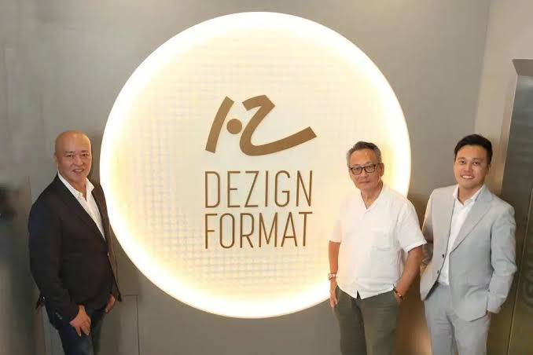

C / Provisional
About 68% of scored evidence is audited or independently disclosed; customer and order-book detail remain thin.
SGX: UZF · Experiential · Research exhibit 12
Strong project economics. A newly expensive corporate layer.
A net-cash design-and-build house with attractive gross margins and genuine execution depth. The open question is whether post-listing overhead and new ventures can earn their keep.
The score
The 58.8 score reflects a financially sound operating core, offset by limited disclosure, compressed earnings and execution risk in the Johor and location-based entertainment expansion.
Net cash, a tangible production platform, positive multi-year operating cash generation and gross margins that recovered to 40.9% in 1H2026.
FY2025 profit fell 77%, corporate costs expanded, customer concentration is undisclosed and the new LBE venture is still loss-making.
About 68% of scored evidence is audited or independently disclosed; customer and order-book detail remain thin.
The range moves mainly with the durability of gross margin, overhead control and proof that expansion capital earns returns.
Financial Strength 40, Market Position 20, Growth Potential 25 and Risk & Governance 15.
Exhibit · The operating model
Founded in 1988, Dezign Format turns design concepts into physical environments through creative, production and installation teams in Singapore and Johor.
Luxury-brand work signals finish quality, schedule discipline and the ability to coordinate complex temporary environments.

The listed vehicle now carries a larger corporate platform; utilisation must catch up.
85% of FY2025 revenue and S$10.59m of segment profit.
37.5% segment margin14% of revenue and S$1.50m of segment profit.
31.4% segment marginAn option on owned experiences, but currently subscale.
S$0.76m segment loss| Period | Projects | Revenue | Average project size |
|---|---|---|---|
| FY2024 | 607 | S$33.4m | S$55.0k |
| FY2025 | 552 | S$33.1m | S$59.8k |
| 1H2025 | 265 | S$16.7m | S$63.0k |
| 1H2026 | 350 | S$15.0m | S$43.0k |
1H2026 volume rose, but mix shifted toward smaller jobs. Throughput alone is not evidence of pricing power.
Evidence · Financials
Revenue has held near S$33m, but FY2025 net profit fell from S$5.0m to S$1.15m as gross profit softened and listing plus corporate costs expanded.
Top-line resilience masks a step-change in the cost base. The central question is conversion, not demand alone.
| Period | Revenue | Gross profit | Gross margin | Net profit | Net margin | Operating cash flow |
|---|---|---|---|---|---|---|
| FY2022 | 18.3 | 6.7 | 36.5% | 1.6 | 9.0% | 1.3 |
| FY2023 | 26.0 | 9.8 | 37.8% | 3.3 | 12.6% | 5.9 |
| FY2024 | 33.4 | 13.0 | 38.8% | 5.0 | 15.0% | 6.1 |
| FY2025 | 33.1 | 11.8 | 35.5% | 1.15 | 3.5% | -3.1 |
| 1H2025 | 16.7 | 5.8 | 34.7% | 1.5 | 8.7% | 0.7 |
| 1H2026 | 15.0 | 6.1 | 40.9% | 0.5 | 3.3% | 3.7 |
Starting profit S$5.03m; lower gross profit -S$1.20m; listing costs -S$1.09m; other administrative growth -S$1.05m; other movements -S$0.28m; higher tax -S$0.26m; ending profit S$1.15m.
Evidence · Balance sheet
IPO proceeds created room to invest, but the burden of proof shifts from solvency to capital allocation.
More than half of the expansion pool remained undeployed. Optionality is valuable only while investment discipline stays visible.
Decision · Valuation
At S$0.185, the company was valued at roughly S$36.9m equity and S$33.4m enterprise value. The answer changes sharply depending on whether FY2024 or FY2025 represents normal earnings.
Valuation is not the debate; normalised earnings are. Investors are underwriting some recovery already.
Evidence · Demand
Demand is event-led and project-specific. Revenue visibility depends on tender wins, client schedules and the company's ability to deliver many short-cycle jobs without margin leakage.
Festive campaigns, exhibitions, launches and venue refreshes create a brief.
Creative concept, production proof and price determine conversion.
Singapore and Johor capacity convert design into a physical environment.
Revenue and margin emerge over short delivery windows with working-capital swings.
Singapore remains a high-density market for exhibitions, tourism and luxury activations.
Short contracts and client timing make order-book transparency unusually important.
LBE could add repeat revenue, but current evidence is a loss-making pilot rather than a proven format.
Framework · Market position
The strongest case is a bundled execution system that lowers coordination risk for complex installations. The weakest part is the lack of numbers showing how durable that advantage is.
Design, production and installation can be coordinated under one accountable provider.
Reliability matters, but projects are tendered and alternatives remain available.
Gross margins are attractive; declining average project size complicates the signal.
LBE creates an ownership option, but no repeatable unit economics are disclosed.
Customer concentration, repeat rates and order book are not reported.
High-finish environments with brand-sensitive delivery requirements.
Cultural and educational formats that demonstrate interpretive build capability.
Evidence of visitor-facing and hospitality projects beyond static decor.
Decision · Risk matrix
Select a risk to inspect its trigger and the evidence that would mitigate it. Position reflects report-date likelihood and impact.
Decision · Strategy and outlook
The roadmap sequences evidence. Each gate should be cleared before management adds the next layer of fixed cost or expansion capital.
Hold annual administration near S$10m and below 28% of revenue.
Show Johor capacity supports a full-year gross margin of at least 39%.
Publish top-five concentration, repeat-client rate and order-book coverage.
Expand overseas and LBE only when unit economics are independently clear.
FY2027 scenario model
Core demand stabilises and overhead begins to normalise.
Dezign Format has a credible operating franchise and the balance sheet to improve it. The investment case becomes stronger when management proves that listed-company infrastructure and new ventures expand earnings rather than merely expand the organisation.
Sources and update history
Update history: 31 Oct 2026 — initial full analysis published; FY2025 and 1H2026 evidence incorporated.
Research standard
Reported figures are reproduced from company materials. Ratios, scenario cases and the score are Beyond Our Gallery calculations. Scenario values are assumptions, not forecasts. Undisclosed values are not treated as zero.
This independent editorial research is not investment advice, a recommendation or an offer to transact. The author has not been paid by the covered company.